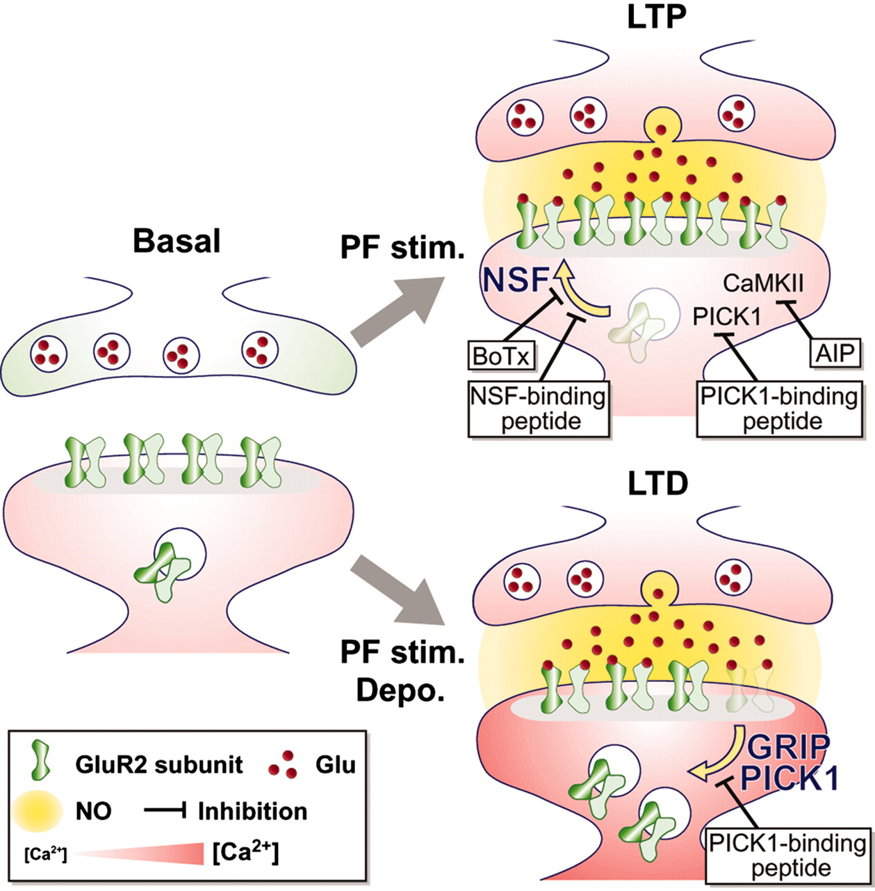
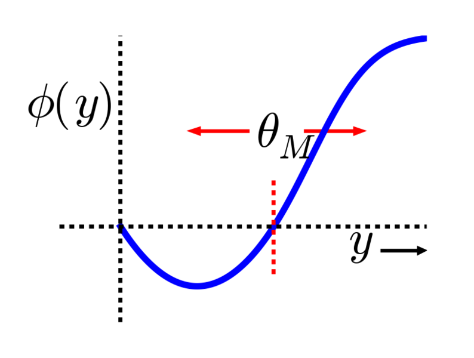
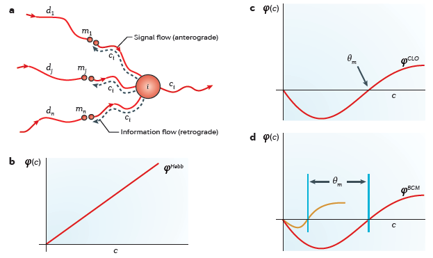

Week 12: neurons, II
Lecture 12.1: learning

Lecture 12.1: learning via synaptic modification
- computational models of synaptic learning:
- the Hebb rule and the Oja rule
- the BCM rule / projection pursuit
- biological relevance of the BCM rule
a by-now-unnecessary reminder: how a neuron computes
The basic computation performed by a neuron:
- multiply the components of the incoming signal
\(\textbf{x}=(x_1,x_2,\dots,x_i)\) by their corresponding
synaptic weights, \(\textbf{w}=(w_1,w_2,\dots,w_i)\)
- sum the resulting products;
- pass the sum through a nonlinearity
(e.g., logistic sigmoid);
- compare the result to a threshold;
- if it exceeds the threshold,
then output an
action
potential (spike).
how neurons learn: experience driving the changes

In many types of neurons, the synaptic weight \(\textbf{w}\)
is modifiable by experience (and so are
some of the parameters that control this modification process; see
slides #10-#11).
Synaptic modification can take the form of
Long-Term Potentiation
(LTP) or Long-Term Depression
(LTD) of synaptic efficacy (weight).
The details of these processes — even the vastly oversimplified
sketch of the molecular dynamics of LTP and LTD illustrated here — are beyond the
scope of the present discussion.
Experience = joint
statistics of presynaptic and postsynaptic
neuron activities.
a reminder re the neuron's "experience": the War Room analogy

Experience = joint
statistics of presynaptic and postsynaptic
neuron activities.
Why it makes sense to define experience in terms of synapse-level events:
— remember the analogy between the brain/mind and a war cabinet.
Why it makes sense to consider experience through the lens of statistics:
— review material from weeks 1 through 10 :-)
Why JOINT INPUT&OUTPUT statistics?
— because consequences matter (in reinforcement learning,
consequences of actions; here, of neural activity)
ASH NAZG...
ONE RULE TO BRING THEM ALL:
The Hebbian rule: "neurons that fire together,
wire together".
[That's roughly speaking. There's a lot of nuance to it.]
input space and weight space, visualized together

Consider a neuron that computes
$$
y = \textbf{w}\cdot \textbf{x} = w_1 x_1 + w_2 x_2
$$
On the right, the input \(\textbf{x}=(x_1,x_2)\) and the weight
\(\textbf{w}=(w_1,w_2)\) vectors are plotted together in the same
2D space. The dotted line shows the change that the weight vector
undergoes through Hebbian learning (see next slide).
In the plot here, the horizontal and vertical axes are for
\((x_1,x_2)\), which is the input space, and for
\((w_1,w_2)\), which is the weight space.
input/output statistics driving weight changes
Consider a neuron that computes
$$
y = \textbf{w}\cdot \textbf{x} = w_1 x_1 + w_2 x_2
$$
Computational analysis carried out in the 1980s* showed that
neurons with
experience-dependent Hebbian synapses (as in: spike timing
dependent
plasticity, STDP, to be discussed later this week) learn the
projection that maximizes the
variance of the data in the resulting space. In
other words, they carry out Principal Component Analysis
or PCA.
In the plot here, the horizontal and vertical axes are for
\((x_1,x_2)\) and \((w_1,w_2)\).
* Sanger, T. D. (1989).
Optimal unsupervised learning in a single-layer
linear feedforward neural network. Neural Networks
2:459-473.
the Hebb rule and Oja's modification of it
Hebbian learning: a synaptic connection between two neurons
increases in efficacy in proportion to the degree of
correlation between the mean activities of the pre-
and post-synaptic neurons
(Donald
O. Hebb, 1949).
The Hebb rule in formal notation: the rate of
change (time
derivative) of the weight \(w_i\) is
proportional to the product of the input \(x_i\) and output
\(y\) —
$$
\begin{matrix}
y &=& \sum_i w_i x_i \\
\frac{dw_i}{dt} &=& \eta x_i y
\end{matrix}
$$
The Oja rule:
$$
\frac{dw_i}{dt} = \eta \left(x_i y - y^2w_i\right)
$$
an axiomatic approach to modeling synaptic modification, leading
to the BCM rule (after Cooper & Bear 2012)
To account for much data on synapse modification in response to
experience, Bienenstock,
Cooper, and
Munro (1982) proposed the three
postulates of what came to be called the
BCM theory:
- The change in synaptic weights (\(dw_i/dt\)) is proportional to
the PREsynaptic activity (\(x_i\)).
- The change in synaptic weights (\(dw_i/dt\)) is also proportional to a non-monotonic
function (denoted by \(\phi\)) of the POSTsynaptic activity (\(y\)):
- for small \(y\) , the synaptic weight decreases
(\(dw_i/dt < 0\));
- for larger \(y\) , it increases (\(dw_i/dt > 0\)).
The cross-over point between \(dw_i/dt < 0\) and \(dw_i/dt > 0\) is called the
modification threshold, and is denoted by \(\theta_M\).
-
The modification threshold \(\theta_M\) is itself a nonlinear
function of the history of postsynaptic activity \(y\).
Principle (2) implies that "the rich [the already strong
synapses] get richer and the poor get poorer."
an objective-function formulation of BCM & dimensionality
reduction by Projection Pursuit

The BCM rule (Intrator and Cooper, 1992):
$$
\begin{matrix}
y &=& \sigma\left(\sum_i w_i x_i\right) & \ \\
\frac{dw_i}{dt} &\propto & \phi\left(y\right)\cdot x_i &= y\left(y-\theta_M\right)\cdot x_i \\
\theta_M &=& E\left[y^2\right] & \
\end{matrix}
$$
where \(E\) denotes expectation (statistical averaging).
This form of BCM can be derived by minimizing a loss (or objective,
or cost) function
$$
R = -\frac{1}{3} E\left[y^3\right] + \frac{1}{4}E^2\left[y^2\right]
$$
that measures the
bi-modality of the output distribution.
Similar rules can be derived from objective functions based on
kurtosis and
skewness.
The overarching goal:
seek
interesting projections — those characterized by a far from
the
normal distribution (the
Central Limit Theorem suggests that projections of
a cloud of random points in hi-dim tend to be normal).
the conceptual steps in getting from Hebb (a) to BCM (d)

(a) For the information required for Hebbian synaptic modification
to be available locally at the synapses, information about the
integrated postsynaptic firing rate \(c\) must be propagated backwards or
retrogradely. The existence of 'back spiking' (dashed lines) was confirmed
experimentally and shown to be associated with changes in synaptic
strength.
(b) Simple Hebbian modification assumes that active synapses grow
stronger at a rate proportional to the concurrent integrated postsynaptic
response; therefore, the value of \(\phi\) increases monotonically with
\(c\).
(c) The CLO (Cooper, Liberman, and Oja) theory combined Hebbian and
anti-Hebbian learning to obtain a more general rule that can yield
selective responses. When a pattern of input activity evokes a
postsynaptic response greater than the modification threshold
(\(\theta_m\)), the active synapses strengthen; otherwise, the active
synapses weaken.
(d) The BCM (Bienenstock, Cooper and Munro) theory incorporates
a sliding modification threshold that adjusts as a function of the history
of average activity in the postsynaptic neuron. This graph shows the shape
of \(\phi\) at two different values of \(\theta_m\). The orange curve
shows how synapses modify after a period of postsynaptic inactivity, and
the red curve shows how synapses modify after a period of heightened
postsynaptic activity.
the important properties of the BCM rule (Intrator and Cooper, 1992)
-
As an exploratory projection index, it seeks deviation from a
Gaussian distribution, in the form of multi-modality.
-
It naturally extends to a lateral inhibition network, which can find
several projections at once.
-
The number of calculations of the gradient grows linearly with the
number of projections sought, thus it is very efficient in high dimensional
feature extraction.
-
The search is forced
to seek projections that are orthogonal to all but one
of the \(K\) clusterings (in the original space). Thus, there are
at most \(K\) optimal projections and not \(K(K−1)/2\) separating
hyper-planes as in discriminant analysis methods. This property is
very important as it suggests why the "curse of dimensionality" is
less problematic with this learning rule.
-
[EXTRA] The neuronal output (or the projection) of an input \(x\) (or a
cluster of inputs) is proportional to \(1/P(x)\), where \(P(x)\)
is the a-priori probability of the input \(x\). This property is
(1) essential for creating
"suspicious coincidence" detectors, and (2)
it also indicates the optimality of the learning rule in terms of
energy (or code) conservation. If a biologically plausible
logarithmic saturation transfer function is used as the neuronal
nonlinearity, it follows that the amplitude or
code length associated with the input \(x\) is
proportional to \(−\log\left(P\left(x\right)\right)\), which is
optimal from
information-theoretic considerations.
lessons?
So, what is it that neurons compute (natively)?
-
Do linear algebra (vector projection / inner product, matrix
multiplication).
-
Implement dimensionality reduction (from many dimensions to one),
including similarity-preserving DR by random projections.
-
Perform function approximation (when arranged
in multilayer networks).
-
Respond selectively (exhibit tuning) [and thus
serve as landmarks/prototypes in a similarity-based
representation scheme, a.k.a. the Chorus Transform].
-
Form spatial maps, presumably to facilitate navigation, episodic
memory and prospection, and social cognition.
-
Form abstract maps (retinotopic, tonotopic, chronotopic, etc.),
presumably to facilitate similarity-based readout.
-
Organize themselves in dynamic assemblies (note the importance of
time) implemented by readout mechanisms.
-
Collectively generate oscillating local electrical fields and
interact with these fields to implement attention etc.
-
Learn.